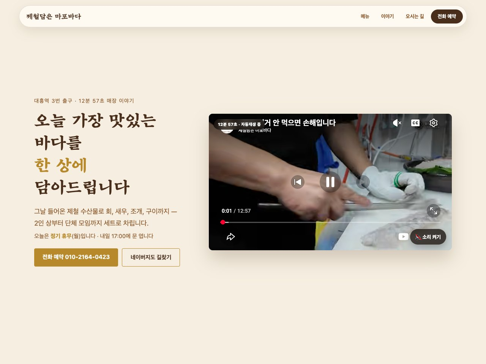

영상 · 홈페이지 · AI 도구
이야기를, 눈앞의 장면으로.
제품의 안쪽을, 한 장면씩.
HAM MEDIA의 자체 3D 설명 예시
가게의 사진이,
홈페이지와 맡은 범위 보기HAM MEDIA 책 자체 홍보 · 36초
AI에게 부탁하기 전, 네 줄.
자주 받는 질문을 안내문 한 장으로. 10월판 책과 무료 실습으로 시작하세요.
인물·음성·장면은 AI로 연출했습니다.

함께 만드는 동료
서도윤 · 대표 비서실장

하고 싶은 일을 어디서부터 말해야 할지 막힐 때, 생각을 꺼내는 대화부터 시작합니다.
대화 시작하기 ↗김다온 · 편집장

글과 사진에서 전하고 싶은 이야기를 찾고, 읽는 사람에게 닿도록 함께 정리하는 동료입니다.
이야기를 정리하고 싶다면, 햄집사에게 말하기 ↗손건우 · 기술 총괄 책임자

정리한 생각을 영상·홈페이지·AI 도구로 만드는 동료입니다.
실제 작업과 맡기는 방법 보기 ↗AI 캐릭터·음성이 포함된 HAM MEDIA 공개 영상
어떤 일을 함께 만들까요?
혼자 먼저 해 보고 싶다면, 쓰고 있는 AI와 내 질문을 한 페이지로 만들어 보세요. 1~7강 무료 수업이며, 1~4강은 휴대폰으로 시작하고 5~6강은 컴퓨터로 실습합니다.